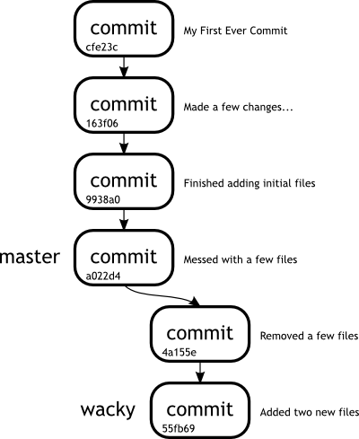

Week 4Day 1 - "We're getting somewhere"
Planting trees
Tamagoyaki Inc have now realised that they have to take these things slow and steady if they want to implement a stable and robust system.
This week, they are going to start actually using branches and merging in changes, probably one of the largest topics to cover when doing any type of collaborative development.
In the trenches...
"Dude!" shouted Eugene from across the office.
"Dude!!" he repeated.
No one looked up and the hum of the computers seemed to drown out the murmurs of voices and clicking of keys.
"Dud..."
He was cut off by another voice.
It was Klaus.
"Maybe if you gave us some indication of who you were addressing Eugene," said Klaus in his usual matter-of-factly tone,
"we may actually be able to help you."
"John!" Shouted Eugene, as if ignoring Klaus entirely.
The manager hadn't looked up from his monitor as he had advised the tools guy and he now sat there continuing to type with one hand, the other reaching over and yanking out the earbud that was playing a droning beat in John's ear.
"Ouch!" said John, slightly startled.
"Dork wants you," said Klaus, using his pet name for Eugene.
John walked over to Eugene.
"Sup?!"
"I don't get branches," said the developer.
"I mean I don't get what the heck they do, why I would ever want to use them, and how are they even different to tags anyway?"
First, we should probably start off by answering that very question and describing what branches are and what they can be used for.
In Git, a branch is just a pointer to a commit in the repository.
At first glance this might not seem any different to a tag.
A tag points to a commit, so does a branch.
So what distinguishes between the two? Let us start playing with branches a little and the answer will become obvious in a while.
Branches allow you to try things out and even keep a history of the things you try without actually affecting your main branch.
In essence you are able to take things in a completely different direction, safe in the knowledge that your core code base will be safe.
This is best illustrated by a little demonstration, so we are going to take our testing repository and branch off to try out new, wonderful and wacky things.
john@satsuki:~/coderepo$ ls
my_first_committed_file my_third_committed_file
my_second_committed_file temp_file
john@satsuki:~/coderepo$ git branch wacky
john@satsuki:~/coderepo$ git branch
* master
wacky
john@satsuki:~/coderepo$
From looking at the output, it would appear that our git branch wacky command did not accomplish a whole lot.
Running the git branch command will give us a list of all branches in the repository.
You may have noticed the presence of the * in front of the word master.
This is telling us that we are on the branch called master.
Hang on though, did we not just create a new branch called wacky?
Well yes we did.
However we have not yet switched to it.
To do this, we use our good friend git checkout.
This will change the working copy to reflect the most recent commit in that branch, and will reset our HEAD accordingly, so that it points to this latest commit
john@satsuki:~/coderepo$ git checkout wacky
Switched to branch 'wacky'
john@satsuki:~/coderepo$ git branch
master
* wacky
john@satsuki:~/coderepo$
Now the * has moved to be in front of the word wacky and we have confirmation from the line above that we have in fact Switched to branch 'wacky'.
Now we are here in wonderland, what can we do? Well, potentially anything we could do in our previous branch, but with the added benefit that we are separated.
Some of you maybe be thinking, but we never created an initial branch called master.
Whilst this is true in one sense, the git init command actually created this branch for us when we initialised the repository.
We will start off by taking a deeper look at what is present in our branch.
Running a git log shows us the history of our branch.
john@satsuki:~/coderepo$ git log
commit a022d4d1edc69970b4e8b3fe1da3dccd943a55e4
Author: John Haskins <john.haskins@tamagoyakiinc.koala>
Date: Thu Mar 31 22:05:55 2011 +0100
Messed with a few files
commit 9938a0c30940dccaeddce4bb2eb151fba3a21ae5
Author: John Haskins <john.haskins@tamagoyakiinc.koala>
Date: Thu Mar 31 20:34:23 2011 +0100
Finished adding initial files
commit 163f06147a449e724d0cfd484c3334709e8e1fce
Author: John Haskins <john.haskins@tamagoyakiinc.koala>
Date: Thu Mar 31 20:32:59 2011 +0100
Made a few changes to first and second files
commit cfe23cbe0150fda69a004e301828097935ec4397
Author: John Haskins <john.haskins@tamagoyakiinc.koala>
Date: Thu Mar 31 20:27:44 2011 +0100
My First Ever Commit
john@satsuki:~/coderepo$
You may notice here that the log messages being displayed are identical to that which we had before in our master branch.
This is nothing to be worried about.
You may be wondering how these can be present if we are in a totally separate environment.
Well, though we have branched, the history that led us to this point is the same.
As we have not made any changes yet, we do not notice any divergence.
If we now make changes to the repository we can take a look and see how this will affect things.
To start with, let us remove a few files from the working tree, commit these actions, then add a few more, stage them and commit the new files.
john@satsuki:~/coderepo$ git rm my_first_committed_file
rm 'my_first_committed_file'
john@satsuki:~/coderepo$ git rm my_second_committed_file
rm 'my_second_committed_file'
john@satsuki:~/coderepo$ git commit -m 'Removed a few files'
[wacky 4a155e4] Removed a few files
2 files changed, 0 insertions(+), 2 deletions(-)
delete mode 100644 my_first_committed_file
delete mode 100644 my_second_committed_file
john@satsuki:~/coderepo$ echo "A new file" > newfile1
john@satsuki:~/coderepo$ echo "Another new file" > newfile2
john@satsuki:~/coderepo$ git add newfile*
john@satsuki:~/coderepo$ git commit -m 'Added two new files'
[wacky 55fb69f] Added two new files
2 files changed, 2 insertions(+), 0 deletions(-)
create mode 100644 newfile1
create mode 100644 newfile2
john@satsuki:~/coderepo$
So we have made two new commits to the repository under our new branch.
If we run a Linux ls command to see the files which are in the working tree, we can see that our working copy has indeed altered.
We will also use our git log tool to see what the latest commit is.
john@satsuki:~/coderepo$ ls
my_third_committed_file newfile1 newfile2 temp_file
john@satsuki:~/coderepo$ git log -n1
commit 55fb69f4ad26fdb6b90ac6f43431be40779962dd
Author: John Haskins <john.haskins@tamagoyakiinc.koala>
Date: Fri Apr 1 00:10:49 2011 +0100
Added two new files
john@satsuki:~/coderepo$
Brilliant.
As you can see, we have used git log in a slightly different way to limit the number of commits.
This is what the -n parameter is used for.
However, what happens if we go back to the master branch again? In theory we should have everything back the way we left it just before creating the branch.
Let's move back into our master branch and examine the state of play.
john@satsuki:~/coderepo$ git checkout master
Switched to branch 'master'
john@satsuki:~/coderepo$ ls
my_first_committed_file my_third_committed_file
my_second_committed_file temp_file
john@satsuki:~/coderepo$ git log -n1
commit a022d4d1edc69970b4e8b3fe1da3dccd943a55e4
Author: John Haskins <john.haskins@tamagoyakiinc.koala>
Date: Thu Mar 31 22:05:55 2011 +0100
Messed with a few files
john@satsuki:~/coderepo$
Comparing that to our previous ls command, we can see that this is exactly what the working tree looked like at the beginning of the chapter.
Let us take a look at a diagram of the commit history to see what has happened in our repository.
|  |
|
Figure 1
Our first branch |
|
So there are really two pointers in our repository at the moment, from a branch point of view.
One of them points to commit a022d4d... and is called master.
The other is called wacky and points to 55fb69f....
At this point you may be thinking that branches are pretty much the same thing as tags.
Well, they are except for one important fact.
We are going to use our git branch command, with a new parameter, to show us the difference.
Take a look at the output of the following operations.
We have pruned the output of the git show command for brevity.
john@satsuki:~/coderepo$ git checkout wacky
Switched to branch 'wacky'
john@satsuki:~/coderepo$ git branch -v
master a022d4d Messed with a few files
* wacky 55fb69f Added two new files
john@satsuki:~/coderepo$ git tag v2.0
john@satsuki:~/coderepo$ git show v2.0
commit 55fb69f4ad26fdb6b90ac6f43431be40779962dd
...
...
...
So here we have added a tag in our current branch, wacky, and we can see that the commit ID for the tag v2.0 points 55fb69f.
We can also see that the branch wacky is currently pointing to the same commit ID, 55fb69f.
Now let us add another file in, make a commit and see what happens after this.
john@satsuki:~/coderepo$ echo "New stuff" > another_file
john@satsuki:~/coderepo$ git add another_file
john@satsuki:~/coderepo$ git commit -m 'Added another file'
[wacky 9710177] Added another file
1 files changed, 1 insertions(+), 0 deletions(-)
create mode 100644 another_file
john@satsuki:~/coderepo$ git show v2.0
commit 55fb69f4ad26fdb6b90ac6f43431be40779962dd
...
...
...
john@satsuki:~/coderepo$ git branch -v
master a022d4d Messed with a few files
* wacky 9710177 Added another file
john@satsuki:~/coderepo$
How interesting.
The difference between tags and branches now becomes pretty clear.
Whilst a tag always points to the same commit, a branch reference always points to the tip of that branch.
In essence the reference that a branch points to moves as subsequent commits are made.
By doing this, the whole history of the branch can be retraced.
Since we know the latest commit, we also know the parent of that commit and so on and so on.
Since a branch is just a pointer to a commit, performing operations like adding, modifying and deleting files in the repository can be done safely, without destroying any data in another branch.
In short, it will allow us to completely redesign whatever is being stored in the current branch without worrying about how it will affect our baseline.
For a developer, this is pretty crucial stuff.
This gives people the chance to play with their data and experiment, which is often where the greatest ideas come from.
|
|